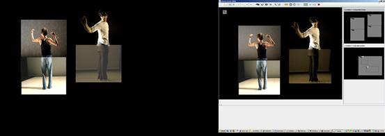
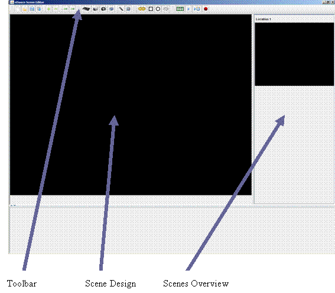
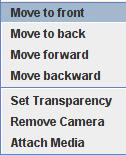

The eDance Scene Editor is a software tool which allows users to design a series of scenes using media inputs such as cameras (fire wire, or USB input), pervious recorded material, transmitted streams from around the world, and sound. The display to the audience will occur on a second attached screen or via an attached projector. It provides options for life manipulations, like moving the position of videos, or changing the transparency of them.
The eDance Scene Editor is written in Java and provides libraries for Windows, Linux, and Mac but is so far tested only on Windows.

Main functionalities are implemented and tested. Secondary functionalities are designed (hooks provided) but not yet implemented. Major effort has to be put into net interactivity, exchange of scene layouts, following a life show…
java -Djava.library.path=[path to operating system libraries (libwindows/libmac/liblinux)] -Dsun.java2d.noddraw=true
-Xmx1024M -Xss2048K -jar edance.jar [ip/port/ttl of video] [ip/port/ttl
of audio]
It is recommended to use multicast addresses for transmitting and receiving streams. See documentation about the Access Grid for details about multicast. When the tool is started using the address of existing Access Grid rooms, streams transmitted via the Access Grid (assuming they are transmitted in a suitable codec) can be used in the performance.
-Dsun.java2d.noddraw=true
is necessary to allow transparency.
The increase in memory is recommended since working with video in real-time is memory intensive.

The Scene Editor window is divided into four parts, the Toolbar for selecting functions, the Scene Design area in which the user can place their media objects, the Scenes Overview area in which the user has an overview about available scenes and can change the order in which they occur, and a sill empty space in which at a future time the timing of a show can be edited (using the idea of a video cutting area, with different lines for different locations and time bar).
In running mode the current scene is also displayed on the second screne/projector. All interactions within the Scene Design area are then also applied to the live show.
Buttons from left to right:
New Project (not working)
Open Project – you will be asked whether to save the current project, afterwards an open dialog will open and you can select a file with the ending *.ecf (e-dance config file) from your file system. When a project is loaded it is tried to match any available stream to what was saved in the project. Streams might have changed names and a mapping is not possible or wrong. In this case some re-attaching of streams by hand is necessary.
Save Project – a save dialog will be opened. Select a place and name for your project file. All scenes, all media objects within each scene, their position, transparency, and stream source is saved. The *.ecf format is a XML based format.
Upload Project files to Memetic server or DSpace repository – an open dialog will open, you should select the place in which the recording of media took place (you should see a directory with the name ‘recording’). Afterwards a dialog is displayed where you can change, or create metadata to your recording. After you saved this data, an upload recording dialog is opened where you are required to input the URL to the repository, a username and a password for this server. The URL determents whether the server is a Memetic or a DSpace repository. Press Export to start the upload. Please not that the upload can take very long depending on the size of the data. You can continue to work but should not shutdown the program. (In the Task Manager the transfer rate will drop when transfer is finished – sorry no other indication yet.)
New Scene – adds a new scene to the project the new scene will be inserted after the current scene.
Delete Scene – deletes the current scene.
Undo Change (not working)
Redo Change (not working)
Pre-recorded Local Video – selects a pre-recorded video object as the next to be inserted into a scene.
Live Video – selects a live video object as the next to be inserted into a scene.
Replay Live Video Time shifted (not working)
Picture (not working)
Live Audio – selects a live audio object as the next to be inserted into a scene.
Pre-recorded Audio – selects a pre-recorded audio object as the next to be inserted into a scene. This can be either a stream recorded with this tool, or simple wave file (Attention: only very few codecs work so far and don’t infringe on copy write law by streaming material).
Mask (not working)
Rectangular Mask (not working)
Circular Mask (not working)
Freeform Mask (not working)
Screen Aspect Ratio – change between 3:4 to 16:9 aspect ratio depending on the projector used.
Run Scene – start displaying scenes on a second display (projector). Automatically the ‘other’ screen is selected. Icon will change to ‘Stop Running the Scene’
Run Scene Timed (not working)
Record – save all streams into working directory. If there are already recordings in this directory a new ‘recordingX’ directory will be created. Icon will change to ‘Stop Recording’
In this area a scene gets created. Media objects are created by clicking on one of the icons (camera, tape, and microphone) and than placed on the design area by clicking with the left mouse button on the spot (where the top left corner is going to be). Objects can be selected by (left) clicking on them (use Shift key for selecting multiple objects), or selecting an area in which the object is part. To select all objects of a scene press Ctrl+a. Objects can be resized by selecting them and either pressing a number key, or pulling on a red corner of an object. Since audio objects are not visible during a show, they are not resizable. Selected objects are movable by dragging.
You have to attach a media stream to make the object sensible.
On a right click on a selected object a menu is shown (see image). There you can select functions to change the order of windows to bring them in front or behind others and also a menu option to attach a media. Depending on what object it is you get a selection of available audio devices (remote and local), video devices (remote or local). Please not that the name of remote sources can change during the lifetime. Local sources are called after the name of the device. If several devices have the same name they get an additional number. If a local camera gets physically removed and reconnected it is necessary to select the menu point ‘Remove Camera’ to remove the dead stream from the object before reattaching the media.
In the same menu you can set the transparency level of videos. A window with a slider bar will appear. You can set any value between completely opaque to completely transparent.
Here you can see all the scenes in the current project with an indication where the scene comes from (currently only one location). You can select the current scene by left clicking on a scene and you can change the order of scenes by drag and dropping them. On a right click on a scene you can select to change its name. A dialog box is displayed there you can input a text. The current scene is shown with a darker background.
Ctrl + c copy the selected objects
Ctrl + v past the copied objects in current scene
Ctrl + t move selected objects to top
Ctrl + b move selected objects to bottom
Ctrl + u move selected objects one up
Ctrl + p move selected objects one down
d/Delete delete selected objects
Arrow keys move selected objects accordingly
Ctrl + a select all objects in scene
1-9 change size of selected objects
s/S change size of selected objects to a small sized window
m/M change size of selected objects to a medium sized window
l/L change size of selected objects to a large sized window
log4j-1.2.15.jar Apache Software License,
Version 2.0
ag3.jar BSD
commons-logging-1.1.1.jar Apache
Software License, Version 2.0
examples.jar LGPL
fmj-nojmf.jar LGPL
jmf.jar Sun
license
javax.servlet.jar Sun
license
jna.jar LGPL
lti-civil.jar LGPL
xom-1.1.jar LGPL
xercesImpl.jar Apache
Software License, Version 2.0
swordcommon.jar Apache
Software License, Version 2.0
mets.jar LGPL
jena.jar http://jena.sourceforge.net/license.html
jakarta-oro-2.0.8.jar Apache
Software License, Version 2.0
commons-codec-1.3.jar Apache
Software License, Version 2.0
commons-httpclient-3.0.1.jar Apache
Software License, Version 2.0
icu4j_3_4.jar http://source.icu-project.org/repos/icu/icu/
trunk/license.html
CrewCodecsLINEAR.jar BSD
CrewCodecsULAW.jar BSD
CrewMedia.jar BSD
CrewCommons.jar BSD
CrewCodecsH261.jar BSD
CrewCodecsCommons.jar BSD
CrewCodecsColourspace.jar BSD